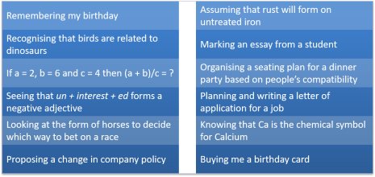
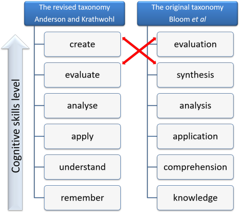
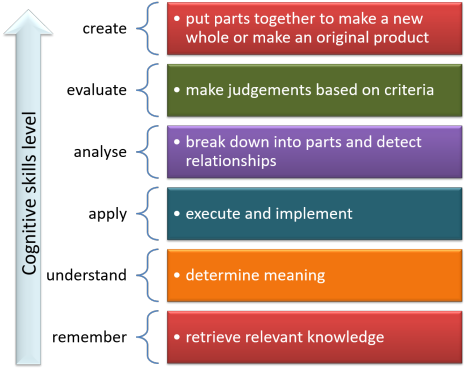
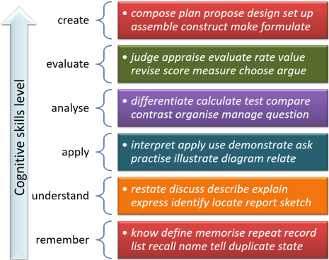

Bloom's taxonomy of educational objectives
If you have trained in the general education of children and
young adults, you will probably have encountered Bloom's taxonomy of
educational objectives. The taxonomy occurs on almost all
teacher-training courses. However, if your training and
current concern is solely to do with the teaching of languages to
adults, then the concepts may be new to you.
Briefly:
The Taxonomy of Educational Objectives is a
framework for classifying statements of what we expect or intend
students to learn as a result of instruction.
Krathwohl, 2002:212
The original taxonomy was worked out over a number of years, starting in 1949 and involved input from many hundreds of researchers, teachers and other specialists. In 1956, the first publication emerged with a 6-level hierarchy of educational objectives classified by the level of cognitive demands placed on the learners.
In the words of the original authors, the motivation behind the taxonomy lay in the fact that:
We are of the opinion that although the
objectives and materials and techniques maybe specified in an almost
unlimited number of ways, the student behaviors in involved these
objectives can be represented by a relatively small number of
classes.
Bloom et al, 1956:12
 |
Thinking |
Bloom's taxonomy, and many other classifications of learning, is grounded on a simple idea:
... learning occurs when the mind makes
connections between what it already knows and new, hitherto unknown
items of information
Waters, 2006:319
It is, therefore, a cognitive theory of how learning happens and
cognition of various sorts is what the taxonomy is about: thinking,
in other words.
There are, of course, many different sorts of thinking and there's
an obvious difference between trying to remember what one had for
breakfast and writing a PhD thesis.
Here's a little test to see if you can pair examples of types of
thinking together to distinguish one sort from another. There
are twelve descriptions of thinking to match into 6 pairs.
Think for a moment and then click on the table for an answer and an
explanation.

Here are some comments:
- In the first row, we have the lowest level of cognitive challenge: remembering a birthday or knowing the chemical formula for an element says nothing about what you can do with the data, just that you can recall the data.
- In the second row we encounter the next step up at which we
show the ability to understand the data we have so we can use it
either to make assumptions about what will happen to iron if it
is not treated (because we remember how iron behaves) or to see
similarities between birds and dinosaurs (because we remember
what they look like, how they are constructed and how they
behave).
Here we are understanding the data we have remembered. - In the third row, we are doing something slightly more
sophisticated: we are applying the data to our behaviour and
remembering to buy a birthday card (by recognising and
understanding social norms and conventions) or solving an equation by
applying some simple addition and division rules (by recognising
symbols and matching them to operations we understand).
Here, we have to remember the data and understand what it means before we can use it. - In the fourth row, we have a level at which we can analyse
the data we have, not just apply it. So we can break down
a word into its constituent morphemes or match personalities to
a seating plan by analysing how people react and respond from
the data we already know.
By this stage, we are remembering, understanding and applying data as well. - At level five, we are being challenged not only to remember, understand, apply and analyse the data but also to evaluate it. In the first case, we have to decide whether past form is a guide to future performance, bearing in mind what may be changed in terms of the track, the weather, the opposition, the jockey and so on. In the second case, we have to hold the criteria in our mind and measure the performance of the student against the standards we or our team have set.
- Finally, we have to apply all the previous types of
cognition to create something original.
At this level, we have to remember the data, understand it, be able to apply and analyse it as well as evaluate what is relevant, what crucial and what peripheral.
What we have just done is look at examples of types of cognitive processes and categorised them in terms of a hierarchy. That is what Bloom and his co-workers did in the early 1950s.
 |
The original taxonomy and later modification |
The original taxonomy had six stages of cognitive challenge:
knowledge, comprehension, application, analysis, synthesis and
evaluation in that order.
More recently, the taxonomy has been revisited and updated,
making some small and other more fundamental changes to the scheme.
Here's an overview:

As you can see, a number of changes were incorporated into the revised taxonomy:
- the original taxonomy was expressed in terms of nouns (knowledge, comprehension, application, analysis, synthesis, evaluation) but in the revised form the categories are expressed as verbs (remember, understand, apply, analyse, evaluate, create).
- the two highest-level categories have had their order reversed so that create is now at the top, above evaluate, where the original categorisation placed evaluation above synthesis.
- the revised taxonomy allows greater overlap between categories (some say at the expense of precision) so the hierarchy is more relaxed.
 |
The knowledge dimension |
In the original version the Knowledge Dimension, in other words, the information on which the cognitive processes work was divided into three categories. The examples given here are for the field of English Language Teaching but the principles can be applied, it is claimed, to all topics of study.
- knowledge of specifics (terminology and facts)
For example: the past tense of the verb go is went, the plural of child is children and so on. - knowledge of ways to deal with specifics (conventions,
classifications, methodologies and so on)
For example, out is a preposition, decide is a regular verb, the language is written from left to right and so on. - knowledge of universals and abstractions (principles and
theories)
For example, in English the adjective usually comes before the verb, adverbs modify verb phrases, we can express the notion of length in a number of different ways and so on.
In the revised taxonomy, there are four categories with the fourth being a new one. Again, the examples are for ELT.
- factual knowledge (things you just have to know)
For example, -er at the end of a word is usually pronounced /ə/, nouns ending in -s take their plurals in -es and so on. - conceptual knowledge (categorisations, principles, theories
and models)
For example, a narrative will normally be divided into Orientation, Complication, Resolution and Coda, prepositional phrases are constructed from a preposition and a noun-phrase complement and so on. - procedural knowledge (techniques and methods and when to use
them)
For example, the ability to infer meaning from co-text, the ability to take notes when listening and so on. - metacognitive knowledge (knowledge of cognition and
awareness of one’s own cognition)
For example, the ability to know what one is doing when monitoring a heard text for specific data, the deliberate application of strategies to signal the end of a turn in conversation and so on.
The knowledge dimension underlies all the cognitive levels in the scheme so, for example, factual knowledge can be remembered, understood, applied, analysed, evaluated and even created.
 |
The 6 categories and what they mean |
In both the original and revised versions of the scheme, the categories are hierarchical so the level of cognitive challenge involved in their use rises from the bottom up. There are, in the revised version we shall be considering from here on, and in the original version, 6 levels (some of which overlap in the revision in particular).
This is a strict hierarchical system in the views of some
proponents. In other words, each level feeds into the next so
learners need to remember something before they can understand it,
understand it before they can apply it, apply it before they can
analyse it and analyse it before they can evaluate it.
At the highest level of create, learners must have remembered,
understood, applied, analysed, and evaluated something before they
can create anything new.
Others are more flexible in their approach and suggest that one can,
for example, analyse what has been read or heard without necessarily
having already applied it. It is also possible, of course, to
evaluate something one has not yet applied but impossible to do so
with something one has not remembered or understood and very
difficult to do so with something one has not analysed.
- Remember

This concerns the ability to retrieve relevant knowledge in order to be able to apply other cognitive processes.
You cannot, for example, classify nouns into sets or fields unless you can recall the nouns in question.
Equally, you cannot speculate about the motives of a character in a story unless you can recall what the character did.
Remembering facts and data in a foreign language is by no means a simple exercise. Input has, at some time to become intake for that to happen. For a guide to how that might occur, see the guide to input, linked in the list of related guides at the end. - Understand

This is, of course, more demanding than remembering.
The category grew originally from the distinction teachers often made between knowing and really knowing. For example, when reading a narrative, knowing consists of being able to recall information concerning who, when, what etc. but understanding involves being able to answer how and why questions.
A learner of English may, for example, know and be able to recall that a passive-voice clause in English is formed with the verb be in an appropriate tense but understanding involves knowing how it is used and why a passive structure is chosen. - Apply
Remembering and understanding are not enough. The next step is to apply knowledge to the world around you.
For example:- recognising affixes which form nouns (-ness, -tion etc.) is part of factual knowledge, understanding how nouns work to make meaning in combination with verbs and other word classes involves some understanding of the phenomenon but inferring meaning from a text by the recognition of how noun phrases are modified and act as the subjects and objects of verbs requires the application of knowledge and understanding for a communicative end.
- Recalling the modal auxiliary verb could to
mean reference to past ability is factual knowledge,
comprehending that it refers to ability or possibility
depending on context and co-text is part of understanding
the verb but being able to communicate the meaning of past
unfulfilled ability in, e.g.:
I could have left early but I stayed to see the end
is first remembering and understanding the verb before applying it for a communicative purpose.
- Analyse

One may be able to remember and understand a sentence such as:
The man told John that the house was for sale
and apply it for a communicative purpose to explain John's behaviour and that is a valuable ability. However, to extend that knowledge to making a sentence such as:
The old woman in the corner of the bar deliberately told Mary and her friends that the concert had been cancelled
requires an ability to analyse sentences in English into items such as Subject noun phrase, Verb phrase, Indirect object noun phrase and Direct object nominalised clause. Without the ability to analyse the constituents of language one remains at the level of remembering, understanding and being able to apply disconnected utterances without the option of producing parallel accurate language for other communicative purposes. - Evaluate
One may be able to remember, understand, apply and analyse a sentence such as
If you hadn't left so early, you wouldn't have missed the important part of the meeting
but, unless you can evaluate how such an utterance is intended and what implications for future behaviours the speaker has in mind, it is difficult to communicate effectively or enter a discussion about causes and effects.
It may, for example, be evaluated as simply a statement of fact with no overtones. On the other hand, it may be evaluated as a criticism of a failure to stay and a warning not to be so lax in future. Evaluation involves, therefore, an understanding of roles, intentions and power relationships and how they affect the application of language to a situation. - Create
This is the most demanding cognitive task because it requires people to deploy all the lower-level skills to make something new. In language teaching, this may involve the combination of language recall, understanding of words and structures, application of language patterns and communicative strategies, analysis of data and the evaluation of the quality and usefulness of the utterances of others. It often requires a synthesis of all those skills.
It is not something to be taken lightly or asked of people without providing a great deal of preparation. For example, in task-based learning programmes, learners may be asked to work in a group to present a complex proposal for the improvement of, say, their home town or place of study and, to do that, they will need to apply all five of the lower-level cognitive abilities simultaneously.
Here's a summary of all that.

 |
Verbs |
| eating talking texting thinking interacting |
The simplest way to determine where on the scale from low- to high-level cognitive demands an activity is set in a classroom is to look at the verbs used to describe what learners have to do.
Long lists of the verbs that betoken each level of the taxonomy are available as check lists to see where the challenge level is being set in terms of how demanding the cognitive processes are. Here is a list which is not exhaustive but may be useful:
| remember | understand | apply | analyse | evaluate | create |
| Circle Count Identify Label List Match Name Pair Record Recall Relate Repeat State Tell Underline |
Communicate Compare Describe Discuss Explain Express Identify Illustrate Recognize Rephrase Restate Talk about Tell Translate Understand |
Apply Ask Complete Demonstrate Dramatise Employ Illustrate Interpret Join Operate Practise Relate Role-play Sketch Use |
Analyse Arrange Categorize Compare Contrast Debate Diagram Differentiate Distinguish Examine Experiment Investigate Organize Question Test |
Appraise Argue Assess Choose Conclude Evaluate Interpret Judge Justify Measure Rate Score Select Support Value |
Assemble Collect Combine Compose Construct Create Design Devise Formulate Make Manage Plan Prepare Propose Setup |
Adding to the list is reasonably straightforward providing you keep an eye on the headings so that the verbs fall into the correct categories.
Using the lists:
- Planning

It is helpful when planning a lesson, a series of lessons, a syllabus or even a whole curriculum to make sure that you know what you are asking of the learners and act accordingly. It is over-challenging, for example, to ask people to analyse something before they have recalled its makeup and understood its content. It is probably impossible to evaluate something one does not understand or can't analyse. Arguably, creating something new is not possible unless the five lower-level skills have already been deployed. - Testing

When we design tests, it is helpful to keep in mind what cognitive demands test items are placing on test takers.
A test element which simply asks learners to match items (e.g., word to definition) is likely to place fewer demands than an element which asks learners to classify items into three or more categories. The former tests remembering, the latter tests understanding.
Test items which require learners to expand skeleton sentences or fill gaps in texts place heavy demands on application and analysis and items which ask learners to interpret motives, judge success or create new texts from scratch place the heaviest demands of all: evaluate and create.
Here's a summary of some that with a few verbs in each category as an aide memoire.

 |
Putting it all into practice |
Objectives do not all have to be addressed at once. That may seem an obvious thing to say but it is something that is often overlooked.
The practical application of a taxonomy of objectives such as this will, as we saw, aid planning and testing in particular but it also impinges on the kinds of activities one uses in the classroom and on the much bigger picture of setting objectives for whole courses or, in the case of compulsory educational settings, whole years of study.
How the taxonomy may be used is situation specific.
- If one is working in the field of compulsory education, teaching children and young adults, the taxonomy may be used across all disciplines to ensure that the syllabus and its assessment (via, e.g., tests) consistently target all the levels of cognition which are the objectives of an educational programme.
- If one is working with mature people learning a language for their own purposes, it may be safe to assume that they are capable of applying all six levels of cognition to tasks and activities. That is not necessarily the case for all adults. In this case, the focus is less on training cognitive abilities and more on teaching and learning the language which accompanies each level on the scale.
A simple way of implementing the taxonomy suggested by Krathwohl (op cit.:217) is making a grid something like this:
| Knowledge | Remember | Understand | Apply | Analyse | Evaluate | Create |
| Factual | Objective 1 | Objective 4 | ||||
| Conceptual | ||||||
| Procedural | ||||||
| Metacognitive | Objective 2 | Objective 3 |
Here is an example from an ELT syllabus applying to and EAP reading skills programme:
| Knowledge | Remember | Understand | Apply | Analyse | Evaluate | Create |
| Factual | identify word class | identify subject and object phrases | categorise phrase class | identify stance | ||
| Conceptual | know genre-specific staging | re-order texts | distinguish verbal processes | summarise | ||
| Procedural | ||||||
| Metacognitive | understand bottom-up text processing | use bottom-up processing | assess effectiveness of b-u processing |
and here is one for a general English speaking skills programme:
| Knowledge | Remember | Understand | Apply | Analyse | Evaluate | Create |
| Factual | listen and repeat intonation patterns | identify levels of politeness | sound polite | |||
| Conceptual | recall initiations and responses | combine responses with initiations | identify 4 types of initiation | assess success of transactions | plan and carry out real-time transactions | |
| Procedural | listen for key words in responses | |||||
| Metacognitive | set aims for transactions | address all aims | evaluate own success |
The important thing to notice in these examples is that objectives are set in terms of what people do at each stage, not what they know.
 |
Questioning, requiring and demanding |
A common application of the taxonomy is to devise and refine
questioning techniques in the classroom taking into account what the
question is actually asking in terms of cognitive demands. We
can also use the taxonomy to make sure that we are pitching demands
to learners at the appropriate level.
Here are some suggested questions or instructions one might use which target the six
cognition levels:
- remember
What happened at the beginning?
Where were they talking?
How many adjectives can you find?
Who spoke first?
Write a list of words to do with sports
Which word in the text means small? - understand
Tell the story to your partner
Write down the three types of travelling Mary did
What happened next?
What's the difference between ...?
Can you distinguish between ...?
Give an example of ...
What does specify mean? - apply
What other times could you use this?
Has this happened to you?
What would you change?
What do you want to ask Mary?
Give John some advice to help him avoid the problem
How can you use this information? - analyse
Re-order the events
How is John's life different from Mary's?
What was the most important problem?
What's the subject of the verb present in line 4?
What does they refer to?
Why is this difficult to understand? - evaluate
Was Mary's response the best one?
What is the value of topic sentences?
Identify three strong points for the proposal
Do you think the new building will be a good thing for the town?
How would you have responded to the question from the policeman?
What changes can you make to sound more polite? - create
Design a ... to ...
Find a solution to ...
How will you redesign the classroom?
Think about what would happen if ...
Think of six ways to make things work better
Create a new course to teach ...
 |
Other uses for the taxonomy of objectives |
Heick (2018) has published a list of 50 Ways to Use Bloom's Taxonomy in the Classroom and, while not all apply to English Language Teaching, many do. Here's a selection (for more, go to the source, listed below). The site also contains an extended verb list similar to the one above. Heick uses the revised version of the taxonomy, addressed here.
- map the curriculum (see above for some ideas and examples)
- construct and improve assessment methods
- personalise learning and encourage autonomy by making learners aware of where on the scale of cognitive demands they are working
- promote meta-cognition in students to make them aware of what they are doing particularly in developing skills
- provide learning feedback with reference to the categories
- help learners write learning journals saying how and where they are operating on the scale
- visualise learners' progress
- guide project work
- challenge more able learners
- differentiate
- create question stems (see above)
- describe skill competence
Classroom examples |
Using the taxonomy to plan classroom procedures and activities
allows us to raise the level of challenge smoothly so that learners
are not being asked to do something for which they are unprepared.
In theory, doing this will result in more successful and confident
production and better achievement of the learning outcomes.
Much of this depends on recognising the Zone of Proximal
Development, i.e., the place in which learners are being adequately
challenged and can proceed with some help but avoiding the areas
where they are under-challenged (so get bored and learn little or
nothing) or over-challenged (where they become disengaged and learn
nothing useful). For more on the ZPD, see the guide to
scaffolding and the ZPD linked below.
Here are some examples, based on and adapted from Waters, 2006, which uses seven slightly differently described and ordered categories (as developed by Sanders, 1966).
 |
remember |
After reading a text describing someone's day out in Berlin, the learners are, for example, asked or instructed to:
- Put the things that Peter did in the order he did them from this list.
- Say what Peter did at lunchtime.
- What did he eat?
- Where did he go after the zoo?
and so on.
All that is being required here is that the learners can recall the
events (with or without a little help). They do not, at this
stage need to understand very much except some basic verbs and
nouns.
 |
understand |
Working with the same text, the learners are, for example, asked or instructed to:
- Why did Peter take a bus?
- How did he get lost on the metro system?
- Match his expressions in the pictures with how he felt about what he saw.
- On the map, draw the route that Peter took when he was walking in the park.
and so on.
Here the learners must not only remember the facts, they must
understand the language and some implications before they can answer
the questions or do the tasks. The questions here ask for an
understanding of cause or manner rather than what, where and when.
 |
apply |
Working with the same text, or without it, the learners are, for example, instructed to:
- Student A: You are Peter and you have met Mary or John for a
drink the week after your day out.
Student(s) B (and C): You are hoping to have a day out in Berlin soon. Ask Peter what he did and find out how much he enjoyed things. Ask him for some advice about travelling around and what to see and do. Don't forget to find out about getting something to eat and having a coffee break. - Write an email from Peter to his friend Mary telling her about the day out and what he enjoyed most.
- With your partner, plan a day out in a city you know and include at least 4 things that Peter did in Berlin.
- Look at the pictures and say:
- what Peter did
- when he did it
- whether he liked it
- what he did next.
and so on.
Now the learners have to apply the language and their understanding
of Peter's feelings and motivations to complete the tasks.
 |
analyse |
Working with the same text, but this time in spoken form rather than written, the learners are, for example, instructed to:
- Listen and write down the phrases which Peter uses to say:
- where he went
- when he went
- why he went
- how he felt
- Listen and write down the adjectives Peter uses to describe:
- buildings
- open spaces
- food
- the weather
- the transport
Here, the learners are required to apply all the lower-level
skills and are also being asked to analyse the language that was
used to express the facts and the feelings. In 1. the focus is
probably on prepositional phrases and other adverbials and in 2. the
focus is probably on word class and collocation.
The next stage here would usefully include applying the phrases and
other items to, say, lists or pictures of events, places, and
activities in a semi-controlled manner. This stage also draws
on remembering, understanding and applying as well as analysing.
 |
evaluate |
Now the text can be put on one side (anything more based directly on it would start to get a little dull, probably) and the learners have to, for example:
- Think of the last time you had a day out in a city or in the country and list the things you did in order of how much you enjoyed them. Then write an email to a friend who is visiting the same area with you and suggest what to do and why.
- In your group write a travel brochure for Berlin based on
the things there are to see and do and suggest an itinerary for:
- a group of teenagers
- retired couples
- a stag or hen party
- a single traveller interested in culture and the arts.
- Write a description of Peter's character and interests based
on what he did and how he felt about things. Does he sound
like someone you could like or not. Why?
When you have done this, go around all your classmates and see if you can find someone who feels the same as you.
All these example tasks focus on getting the learners to evaluate what they can now recall, understand, apply and analyse.
 |
create |
At this stage, freer practice can be introduced because the learners are thoroughly prepared by what has gone before. They might be asked to:
- Choose a place that you know well and research the web for pictures and ideas of places to go. Now try to persuade the other members in your group to visit this place with you. You will need to appeal to all the people in your group, not just yourself.
- Here is your task:
- Write down a description of three things that you like to do when you have a day out and three things you do not like.
- Exchange your list with a partner.
- Go away from your partner and prepare a short presentation for him or her about a day out they could take somewhere you know quite well or somewhere you can imagine.
- The simulation:
- All Student As:
You are a representatives of a city's tourism department at a trade fair. It is your job to persuade people to include your city on their website and encourage people to take short breaks there.
The city can be somewhere you know, somewhere you live or completely fictional.
Prepare a 5-minute illustrated presentation of the city. - All student Bs:
You are the owner of a travel website aimed at people who want a short city break.
Go around the trade fair and talk to each representative, making a list of what they offer and whether you think the city they represent is one you want to put on your website.
Select one and make notes about how the website page should look (including images) and what it should say.
- All Student As:
At this stage, the learners are being asked (challenged, indeed) to apply all the cognitive processes they have applied before and also to step outside themselves and create something new by synthesizing what they have remembered, understood, applied, analysed and evaluated. That is not an easy task but it is made much simpler if attention is paid to the previous five stages before learners are asked to do it.
 |
Level |
It is a false assumption that lower-level learners are incapable
of operating at higher levels of cognitive challenge. If we
make that assumption, we will be denying them the opportunity to use
language evaluatively or creatively and that is both boring and
discriminatory.
Waters puts it this way:
it is possible to combine activities which
involve relatively simple language with complex thinking (and that
activities involving complex thinking do not necessarily require
complex language).
Op cit.:326
In the examples above, the level of language remains unchanged,
focusing as it does on a lexical set concerning leisure activities
and cities. The text, of course, would be radically different,
as would the lexis it contained, at level A2 from level C1 but that
is not the point. It would be possible to apply all six levels
of cognition with any language and communicative skill that is the
target of the lesson or series of lessons.
That requires serious attention to text design or selection but that
is all.
Furthermore, it is not necessary at all levels to dwell on each stage of cognitive challenge. One might assume, for example, that the lexis is already known to the learners so remembering is not at issue. Equally, the language analysis stage may be judged to be redundant if the structural and collocational characteristics of the language have already been mastered.
| Related guides | |
| lesson planning | a simple guide into which the taxonomy can be integrated |
| lesson planning for Delta | a qualification-specific guide |
| developing planning skills | a set of guides for developmental purposes |
| scaffolding and the ZPD | a guide to setting appropriate levels of challenge and supporting learning |
| input | a guide to the ways in which input may become uptake and output |
| Task-based Learning and Teaching | for a guide to an approach which draws on ideas such as those of Bloom and others concerning the cognitive challenge of classroom tasks |
| testing, assessment and evaluation | the main guide to this area into which this taxonomy can be integrated |
References:
Bloom, BS, Engelhart, MD, Furst, EJ, Hill, WH and Krathwohl, DR,
1956, Educational Objectives: The Classification of Educational
Goals, London: Longmans Green and Company
Heick, T, 2018, 50 Ways to Use Bloom's-Taxonomy in the Classroom,
Retrieved from https://www.teachthought.com/learning/ways-to-use-blooms-taxonomy-in-the-classroom/
[March 2019]
Krathwohl, DR, 2002, A Revision of Bloom’s Taxonomy: An Overview,
Theory into Practice, Volume 41, Number 4, College of Education, The
Ohio State University
Waters, A, 2006, Thinking and language learning, in ELT
Journal Volume 60/4, Oxford: Oxford University Press